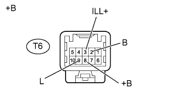
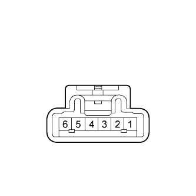
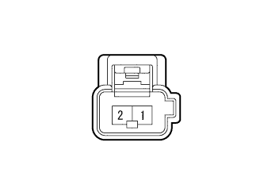
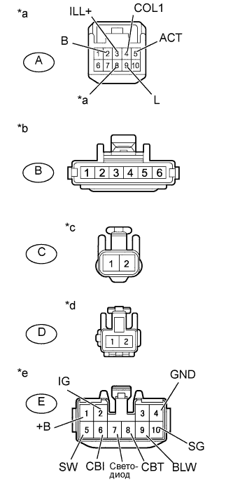

СИСТЕМА КОНДИЦИОНИРОВАНИЯ (для моделей с кондиционером с ручным управлением) > Цепь холодильной камеры |
| 1.ПРОВЕРЬТЕ ЖГУТ ПРОВОДОВ И РАЗЪЕМ (ХОЛОДИЛЬНАЯ КАМЕРА - АККУМУЛЯТОРНАЯ БАТАРЕЯ И МАССА) |
|  |
Отсоедините разъем T6 холодильной камеры.
Измерьте напряжение в соответствии со значениями, приведенными в таблице.
| Контакты для подключения диагностического прибора | Положение переключателя | Заданные условия |
| T6-3 (ILL+) - масса | Переключатель света фар выключен | Менее 1 В |
| T6-3 (ILL+) - масса | переключатель света фар включен | 11 - 14 В |
| T6-2 (B) - масса | Зажигание выключено | Менее 1 В |
| T6-2 (B) - масса | Замок зажигания в положении ON (ВКЛ) | 11 - 14 В |
| T6-8 (+B) - масса | Всегда | 11 - 14 В |
Измерьте сопротивление в соответствии со значениями, приведенными в таблице ниже.
| Контакты для подключения диагностического прибора | Условие | Заданные условия |
| T6-9 (L) - масса | Всегда | Менее 1 Ом |
| *a | Вид спереди разъема со стороны жгута проводов: (к холодильной камере) |
|
| ||||
| OK | |
| 2.ПРОВЕРЬТЕ ЖГУТ ПРОВОДОВ И РАЗЪЕМ (БЛОК УПРАВЛЕНИЯ СИСТЕМОЙ КОНДИЦИОНИРОВАНИЯ - ХОЛОДИЛЬНАЯ КАМЕРА) |
Отсоедините разъемы G25 и G24 усилителя.
Отсоедините разъем T6 холодильной камеры.
Измерьте сопротивление в соответствии со значениями, приведенными в таблице ниже.
| Контакты для подключения диагностического прибора | Условие | Заданные условия |
| G25-15 (COOL) - T6-4 (COL1) | Всегда | Менее 1 Ом |
| G24-12 (SWCB) - T6-5 (ACT) | Всегда | Менее 1 Ом |
| G25-15 (COOL) - масса | Всегда | 10 кОм или более |
| G24-12 (SWCB) - масса | Всегда | 10 кОм или более |
|
| ||||
| OK | |
| 3.ПРОВЕРЬТЕ ПЕРЕКЛЮЧАТЕЛЬ УПРАВЛЕНИЯ ОХЛАДИТЕЛЯ В СБОРЕ |
|  |
Снимите переключатель управления охладителем в сборе (Нажмите здесь).
Измерьте сопротивление в соответствии со значениями, приведенными в таблице ниже.
| Контакты для подключения диагностического прибора | Положение переключателя | Заданные условия |
| 1 - 2 | Выключатель управления кондиционером включен | Менее 1 Ом |
| 1 - 2 | Выключатель управления холодильной камерой выключен | 10 кОм или более |
Подайте напряжение аккумуляторной батареи на разъем выключателя управления холодильной камерой и убедитесь, что включается подсветка этого выключателя.
| Условия измерений | Заданные условия |
| Положительный (+) вывод аккумуляторной батареи → контакт 3 Отрицательный (-) вывод аккумуляторной батареи → контакт 4 | Светодиод горит |
| Положительный (+) вывод аккумуляторной батареи → контакт 5 Отрицательный (-) вывод аккумуляторной батареи → контакт 6 | Светодиод горит |
|
| ||||
| OK | |
| 4.ПРОВЕРЬТЕ ЭЛЕКТРОДВИГАТЕЛЬ ВЕНТИЛЯТОРА ХОЛОДИЛЬНОЙ КАМЕРЫ № 1 В СБОРЕ |
|  |
Снимите электродвигатель вентилятора холодильной камеры № 1 в сборе (Нажмите здесь).
Подайте напряжение аккумуляторной батареи на электродвигатель вентилятора холодильной камеры № 1 и убедитесь, что он работает плавно.
| Условия измерений | Заданные условия |
| Положительный (+) вывод аккумуляторной батареи → контакт 1 Отрицательный (-) вывод аккумуляторной батареи → контакт 2 | Электродвигатель вентилятора холодильной камеры № 1 работает плавно |
|
| ||||
| OK | |
| 5.ПРОВЕРЬТЕ ЖГУТ ПРОВОДОВ ХОЛОДИЛЬНОЙ КАМЕРЫ № 1 |
|  |
Снимите жгут проводов холодильной камеры № 1 в сборе (Нажмите здесь).
Измерьте сопротивление в соответствии со значениями, приведенными в таблице ниже.
| Контакты для подключения диагностического прибора | Условие | Заданные условия |
| A-3 (ILL+) - B-5 | Всегда | Менее 1 Ом |
| A-2 (B) - E-2 (IG) | Всегда | Менее 1 Ом |
| A-8 (+B) - E-1 (+B) | Всегда | Менее 1 Ом |
| A-4 (COL1) - E-8 (CBT) | Всегда | Менее 1 Ом |
| A-5 (ACT) - E-6 (CBI) | Всегда | Менее 1 Ом |
| A-9 (L) - E-4 (GND) | Всегда | Менее 1 Ом |
| A-9 (L) - B-6 | Всегда | Менее 1 Ом |
| A-2 (B) - B-3 | Всегда | Менее 1 Ом |
| B-4 - E-7 (LED) | Всегда | Менее 1 Ом |
| B-2 - E-10 (SG) | Всегда | Менее 1 Ом |
| B-1 - E-5 (SW) | Всегда | Менее 1 Ом |
| A-2 (B) - C-1 | Всегда | Менее 1 Ом |
| C-2 - D-2 | Всегда | Менее 1 Ом |
| A-2 (B) - D-1 | Всегда | Менее 1 Ом |
| D-2 - E-9 (BLW) | Всегда | Менее 1 Ом |
| *a | Вид спереди разъема со стороны жгута проводов: (к жгуту проводов двигателя) |
| *b | Вид спереди разъема со стороны жгута проводов: (к выключателю управления холодильной камерой) |
| *c | Вид спереди разъема со стороны жгута проводов: (к электромагнитному клапану охладителя) |
| *d | Вид спереди разъема со стороны жгута проводов: (к электродвигателю вентилятора холодильной камеры № 1) |
| *e | Вид спереди разъема со стороны жгута проводов: (к блоку управления системой кондиционирования в сборе (для холодильной камеры)) |
|
| ||||
| OK | ||
| ||